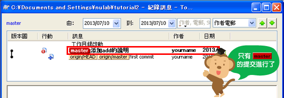
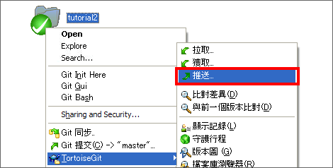
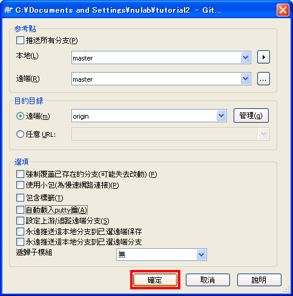
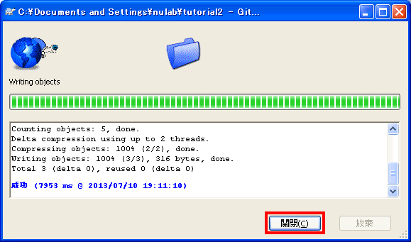
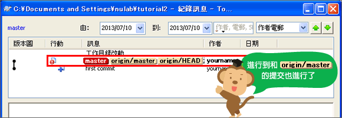
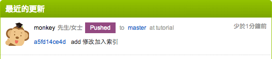

教學2 共享數據庫
在複製的本地端數據庫執行push
讓我們來試試看在複製的本地端數據庫執行push吧。
Windows
tutorial2的操作
首先，在上一頁複製（Clone）數據庫目錄裡的sample.txt，增加以下粗體字的部分後再提交。
連猴子都懂的Git命令 add 修改加入書籤
tutorial2的操作
本地端數據庫的提交已更新。

tutorial2的操作
接著，push以上的提交。對「tutorial2」目錄按右鍵，點一下「推送」。

tutorial2的操作
會顯示以下畫面，點一下「確認」。

tutorial2的操作
顯示以下畫面表示開始push，當執行完成了，請點擊「關閉」以結束畫面。

tutorial2的操作
點右鍵選單的「TortoiseGit」>
「顯示記錄」。如以下的畫面顯示「master」
與「origin/master」都在同ㄧ層的位置，代表遠端數據庫與本地端數據庫同步了。

Tips
複習一下提交的位置。
-
origin/master
代表遠端數據庫「origin」的「master」分支位置。 -
origin/HEAD
代表遠端數據庫「origin」當前提交的位置。通常和「origin/master」的位置相同。 -
master
代表本地端數據庫的「master」分支位置。
我們將會在「進階篇」對分支做更詳細的講解。
請打開貝格樂的Git頁面。您可以看到push內容已被添加到「最近的更新」了。
